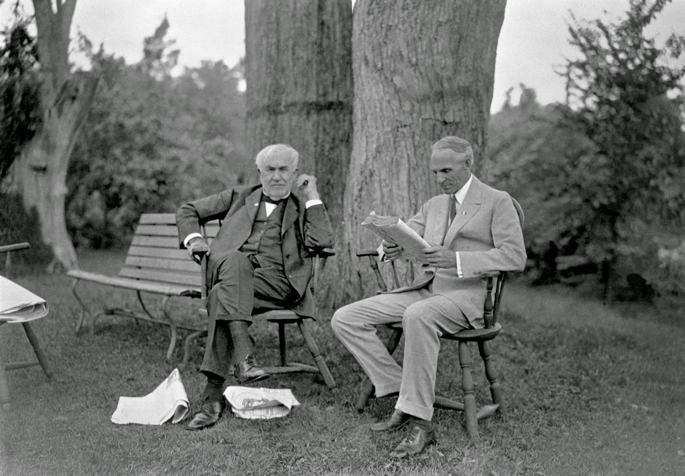

Henry Ford
Người sáng lập công ty Ford Motor

Henry Ford (phải) và Thomas Edition trở thành bạn của nhau dù Ford nhỏ hơn 16 tuổi
Tiểu sử của Henry Ford:
- 1863 - Henry Ford được sinh ra Ireland
- 1873 - Henry lần đầu nhìn thấy một cái máy tự chạy trên đường, một cái động cơ hơi nước đứng yên được dùng để đập lúa hay để cung cấp sức lực cho một máy xay
- 1876 - Mẹ ông chết, không còn nhiều điều hứng thú có thể giữ ông ở lại trang trại nữa
- 1879 - Ông rời gia đình để đến thành phố gần đó Detroit và làm việc với tư cách thợ học việc
- 1882 - Ông quay trở lại Dearborn để làm việc ở trang trại gia đình và trở thành người lão luyện trong việc điều khiển máy hơi nước loại nhỏ Westinghouse
- 1888 - Ford tự kiếm sống bằng cách lao động ở trang trại và điều hành một nhà máy cưa
- 1891 - Ford trở thành một kỹ sư ở Edison Illuminating Company
- 1893 - Thử nghiệm máy chạy xăng
- 1896 - Ông hoàn thành một phương tiện tự hành đầu tiên của mình được đặt tên là Quadricycle
- ... Còn tiếp
"Đa số mọi người tiêu phí thời gian và sức lực vào việc đi đường vòng để tránh các vấn đề hơn là tìm cách giải quyết chúng."
-- Henry Ford.